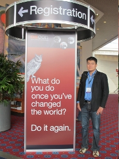
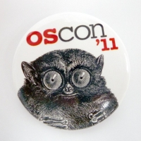

也紀念我們永遠的朋友 李士傑先生（Shih-Chieh Ilya Li）。
| 源碼新聞 | |
| NicoFox：一個已經三年的小小開源專案 | |
| 作者 笨笨的小B (littlebtc) | |
| 2008 年的夏天，有個大學生在自己的宿舍裡，一邊熬夜一邊研究 Firefox 套件開發的文件，想要在幾個月之內寫出一個下載「NICONICO 動畫」上影片的工具—這就是現在的 NicoFox 誕生的源起。NicoFox 是由我開發的專案，轉眼之間，這個套件從初次釋出的 2008 年 9 月 17 日至今，已經三年了！ | |
| 回目錄 | |
| 源碼快訊 | |
| 10 月份自由軟體鑄造場活動快報 | |
| 作者 OSSF工作小組／編述 | |
|
自由軟體鑄造場於 10 月份在台北舉辦兩場自由軟體工作坊活動，歡迎有興趣的朋友們一同共襄盛舉！ |
|
| 回目錄 | |
| 源碼新聞 | |
| Hacking Summer Camp－邊玩邊學的自由軟體夏令營 | |
| 作者 李婉婷／採訪 | |
▲圖1：大溪國小校門口。 每到暑假，總是有許多遊客前往宜蘭頭城的大溪國小，享受它依山傍海、毗鄰沙灘的明媚風光。今年 (2011) 7 月 15 日至 17 日，在坐落於海邊的開放式校園中，聚集了愛好自由軟體的各界朋友，一起共襄盛舉，舉辦了「Hacking Summer Camp 自由軟體夏令營」。Hacking Summer Camp 是由教育部校園自由軟體數位資源推廣服務中心 (OSSACC)，以及中央研究院資訊科技創新研究中心自由軟體鑄造場 (OSSF) 共同舉辦，同時邀請許多自由軟體社群朋友一同參與議程內容的規劃，並且親自分享自由軟體開發心得，來傳承經驗及知識。 |
|
| 回目錄 | |
| 源碼專案 | |
| 開源的行動校園和企業內聯網開發平台－Kurogo Mobile Framework | |
| 作者 Rita Chao | |
前言日文 Kurogo 是漢字黑衣的意思。這個開源平台是 2008 年時，由美國麻省理工學院 (MIT) 數位平台經裡 Andrew Yu 和他的團隊開發出來的。架構的基礎是由開發 MIT 和哈佛行動校園 Apps 的過程中建立，秉持MIT一慣的開放知識和程式碼傳統，Kurogo 從出世以來，就以開放原始碼之姿，提供其他大專院校和企業自由下載及使用。從 2010 年 4 月至今，有 112 個組織採用。 |
|
| 回目錄 | |
| 技術專欄 | |
| 利用 FreeNAS 打造儲存設備(5)安裝篇（嵌入式 USB） | |
| 作者 Weithenn ( https://www.weithenn.org/ ) | |
前言本文主題為 FreeNAS 嵌入式 USB 的安裝及製作方式。主要流程是從 FreeNAS 官方網站取得的最新映像檔，將之解壓縮後寫入 USB 儲存裝置，並且將主機 BIOS 開機順序設定為 USB 裝置開機即可開始使用 FreeNAS。 嵌入式 USB 安裝用於主機環境中無 CD/DVD ROM 光碟機的環境。 實作環境
|
|
| 回目錄 | |
| 源碼秘技 | |
| 擷圖與編修一次完成的開源軟體 Shutter | |
| 作者 陳筱婷 | |
|
軟體名稱：Shutter 版本：0.87.3 官網：https://shutter-project.org 系統環境：Ubuntu 10.04 Shutter 是在 Ubuntu 底下運行的開源擷圖軟體，軟體介面人性化，支援區域選取、桌面擷圖、視窗擷圖三種擷圖方式。在擷取圖片後能進行編輯，可加入文字、線條、圖案方塊與標誌，並能利用套件進行更多種編修，包含旋轉、灰階、重新定義尺寸等。圖片儲存格式支援常見的 jpg、png、gif，另有 bmp、tiff、ani 等共 15 種格式。軟體預設使用 png 格式儲存，若欲用其他格式儲存，可在偏好設定內改成符合自己使用習慣的圖片格式。 |
|
| 回目錄 | |
| 自由文化 | |
| 一年一度的開放源碼大會－OSCON 2011 參與報告 | |
| 作者 黃崇閔 | |
|
每年七月份的第三週，O'Reilly 公司都會在美國俄勒岡州的波特蘭會議中心舉辦一年一度為期一周的開放源碼大會 Open Source Convention (OSCON )。連續五天的會議分為兩個階段，第一階段均為教學演講，於第一、二天舉行，每場均為三小時。大多數的講者為自由軟體開發團隊的成員，演講中會利用一半的時間舉行許多實際操作的活動，讓與會的來賓能夠直接跟自由軟體開發者互動，從中交流討論相關知識。 |
|
| 回目錄 | |
| 自由文化 | |
| OSCON 會議介紹 | |
| 作者 OSSF電子報團隊 | |
|
OSCON 全名為 O'Reilly Open Source Convention，由出版商 O’Reilly Media 舉辦。今年 (2011) 的 OSCON 時間是 7/25~7/29，在美國波特蘭的 Oregon Convention Center 會展中心舉行。原先是屬於 Perl Conference 的一部分，後來到了 1999 年以 OSCON 的名義舉行，原先的 Perl Conference 則融入 OSCON 議程裡。從 2003 年開始，OSCON 幾乎都在美國波特蘭舉行。今年 (2011) OSCON 裡關於 Data 以及 Java 議程從 OSCON 獨立出來，分別叫 OSCON Data 以及 OSCON Java。雖然是另外獨立運作的會議，但舉辦時間與 OSCON 大致相同，地點也相距不遠。 |
|
| 回目錄 | |
| 源碼快報 | |
| Google 再次購買 IBM 專利 Android 夥伴增添保障 | |
| 作者 謝良奇／編譯 | |
| Google 為了讓自己與夥伴運用 Android 作業系統時免於訴訟威脅，籌組智財權軍火庫。如今軍火庫又有了新的武裝。根據美國專利商標局 (U.S. Patent and Trademark Office)，Google 於 8 月時向 IBM 買下超過 1,000 個專利。這件事最早是由新聞網站 SEO By The Sea 揭露，該網站在今年 7 月也報導過這兩家公司的專利交易。 今年 7 月，Google 自 IBM 購買了 1,030 個專利以擴充其專利組合。如今 Google 再次向 IBM 買下 1,022 項專利。Google 發言人雖然證實了這項消息，但不願多作評論。 |
|
| 回目錄 | |
| 源碼快報 | |
| 開放虛擬聯盟會員突破 200 新成員主要來自雲端公司與新興市場 | |
| 作者 謝良奇／編譯 | |
| 由 Red Hat 領軍的產業聯盟－開放虛擬聯盟 (Open Virtualization Alliance, OVA)，旨在促進 KVM (Kernel-based Virtual Machine) 與相關開放虛擬化技術應用，作為 VMware hypervisor 之外的替代方案。該聯盟自 5 月成立以來，會員數如今已成長至 200 個。 | |
| 回目錄 | |
| 源碼快報 | |
| LibreOffice 推出自由模板與延伸套件線上網站 | |
| 作者 謝良奇／編譯 | |
| 開放源碼生產力套件 LibreOffice 的開發者與文件基金會 (Document Foundation) 宣佈，已為 LibreOffice 的模板與延伸套件推出新的社群存儲庫。文件基金會指導委員會成員 Florian Effenberger 表示，目前許多便利的附加元件缺乏可靠且穩定的下載來源，而此一新的存儲庫可提供解決方案。 | |
| 回目錄 | |
| 源碼快報 | |
| Mozilla 工作小組建議為企業用戶減緩釋出時程 | |
| 作者 謝良奇／編譯 | |
| Firefox 開發者正在考慮進一步加速釋出時程，某個獨立的 Mozilla 工作小組卻建議為企業用戶減緩更新步調。 Mozilla 今年初為 Firefox 瀏覽器實施新的 6 週釋出週期，已經引來不少爭議。然而，Firefox 的開發者正在討論是否要再縮短其釋出週期。最近在開發者郵件列表的討論串中，Mozilla 工程主任 Josh Aas 提出了是否要將釋出週期由 6 週縮短至 5 週的意見。 |
|
| 回目錄 | |
| 接案 / 工作 | |
| 自由軟體鑄造場 誠徵工讀生 | |
| 作者 OSSF | |
| 【職 務】工讀生 【需求人數】1名 【工作內容】交辦事務處理，例如︰影像處理、網頁編輯、資料整理...等等 【學歷要求】專科以上（夜間部佳） 【工作經驗】不拘 【工作地點】11529 臺北市南港區研究院路 2 段 128 號 402 室（中央研究院 資訊科學研究所） 【必備條件】
【工作時段】每週安排約 2~3 個工作天（09:30～17:30） 【應徵方式】
|
|
| 回目錄 | |
Special


Address：No.128, Sec.2, Academia Rd., Institute of Information Science, Academia Sinica, Nangang District, Taipei City 11529, Taiwan (R.O.C).
Privacy Policy. Terms-of-use